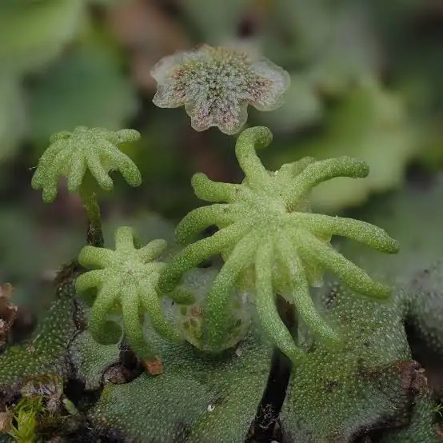
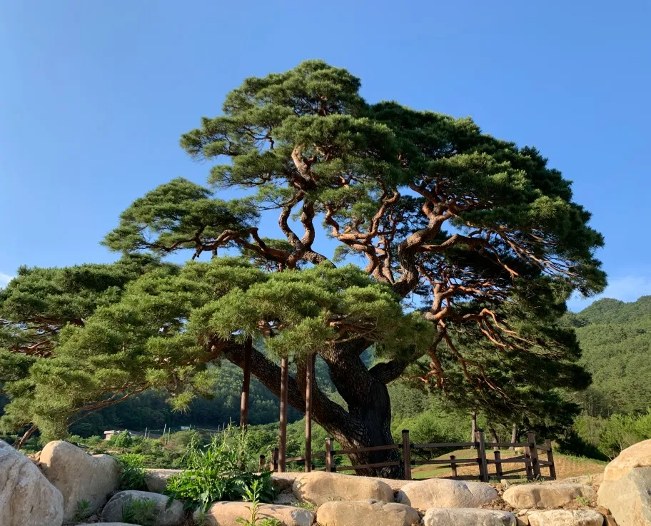

1. 온라인 식물도감

선태식물문 (Bryophyte)
우산이끼
Marchantia polymorpha L.
관다발: 0
종 자: 0
씨 방: 0
원산지 대한민국, 전 세계 온대 지역
개화시기 꽃 피지 않음 (포자 생식)
서식환경 그늘진 다습한 곳
가장 원시적인 지상 육상식물군으로, 수분을 수송하는 전도 조직인 관다발 구조가 성립되지 않아 키가 아주 작게 자란다
양치식물문 (Pteridophyte)
고사리
Pteridium aquilinum (L.) Kuhn
관다발: 1
종 자: 0
씨 방: 0
원산지 온대 및 한대지역 전역
개화시기 꽃 피지 않음 (포자 생식)
서식환경 그늘진 곳
헛물관을 가진 관다발을 가지며, 번식을 위해 씨앗 대신 잎 뒷면의 포자낭에서 생성되는 포자를 방출

나자식물문 (Gymnosperm)
소나무
Pinus densiflora Siebold & Zucc.
관다발: 1
종 자: 1
씨 방: 0
원산지 한국, 일본, 중국 동부
개화시기 5월 (개화)
서식환경 배수가 양호한 척박한 건조지
종자식물이며, 씨방이 없는 겉씨식물이다.
쌍떡잎식물강 (Dicotyledon)
장미
Rosa hybrida Hort.
관다발: 1
종 자: 1
씨 방: 1
원산지 북반구 한대 및 온대 전역
개화시기 5월 ~ 6월
서식환경 일조량이 우수한 양지의 비옥토
씨방 안에 밑씨가 있는 속씨식물이다. 떡잎이 두 개로 나오는 쌍떡잎식물!
외떡잎식물강 (Monocotyledon)
백합
Lilium candidum L.
관다발: 1
종 자: 1
씨 방: 1
원산지 북반구의 온대아시아 및 남유럽
개화시기 5월 ~ 7월
서식환경 배수가 양호한 반그늘 산야 지형
장미와 동일하게 속씨식물이지만, 잎맥이 줄기와 나란하게 평행하게 발달하는 평행맥을 띄고 꽃잎이 대개 3의 배수로 뻗어 나가는 외떡잎식물!
2. 계통수 시뮬레이터
식물의 세 가지 지표 형질 데이터를 조건식 논리회로 연산을 거쳐 분류 흐름도로 렌더링합니다.
이진 형질 판독 기준 (Binary Trait Standard)
A. 관다발(Vascular)
유(1) / 무(0)
B. 종자 형성(Seed)
유(1) / 무(0)
C. 씨방 발달(Ovary)
유(1) / 무(0)
전자공학적 매핑 원리:
본 알고리즘은 입력된 식물 특성 벡터 \( \vec{X} = [A, B, C] \)를 마이크로컨트롤러의 조건 논리식 분기 알고리즘을 거쳐 디코딩(Decoding)합니다. 3개의 디지털 스위치를 통과하는 제어 신호 흐름과 원리적으로 같습니다.
SYSTEM RUNNING
디지털 계통도 출력 화면
시뮬레이션 버튼을 누르세요